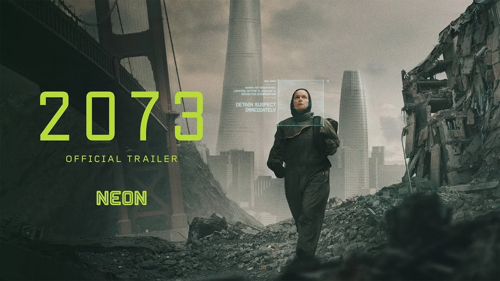

Asif Kapadia'nın yönettiği 2024 yapımı 2073, izleyiciyi adının işaret ettiği geleceğe, yıkılmış bir San Francisco'da hayatta kalmaya çalışan bir kadının dünyasına götürüyor. Samantha Morton'ın canlandırdığı bu karakterin kurmaca hikâyesi, günümüzden alınan haber ve arşiv görüntüleriyle yan yana ilerliyor.
Film; kitlesel gözetim, otoriterleşme, demokrasinin aşınması ve iklim krizi gibi güncel başlıkları, bunların gelecekteki olası sonuçlarını gösteren distopik sahnelerle ilişkilendiriyor. Gazetecilerin ve kamusal figürlerin gerçek görüntüleri, kurmaca öyküye bugünün dünyasından bir bağ kuruyor.
2073'ü geleneksel, yalnızca olguları sıralayan bir belgesel olarak değil; gerçek arşiv malzemesiyle bilimkurgu ve kurmacayı birleştiren bir docudrama olarak değerlendirmek daha doğru. Anlatısı belirgin biçimde uyarıcı ve karamsar bir bakış taşıyor. Bu tercih filmi etkili kılarken, izleyicinin sunulan gelecek senaryosunu kaçınılmaz bir tahmin değil, yönetmenin politik yorumu olarak görmesini de önemli hâle getiriyor.